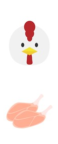

⚠ Nghiêm cấm gian lận！Nếu đóng ứng dụng hoặc chuyển tab sẽ bị coi là GIAN LẬN và bị ghi lại.
⚠️
このテストはSafariで開いてください
Vui lòng mở bài kiểm tra bằng Safari
LINEのブラウザではカンニング防止機能が正しく動作しません。
📋 手順 / Cách mở:
1. 右下の … または ⋮ をタップ
2. 「ブラウザで開く」 を選択
3. Safari で開く
このページはLINEブラウザでは受験できません。
語彙テスト（Bài kiểm tra từ vựng）
問題１．Hãy chọn từ đúng cho mỗi hình ＜各1点×10問＝10点＞
①
②
③
④
⑤
⑥
⑦
⑧
⑨
⑩
問題２．Chuyển sang tiếng Nhật（日本語で書いてください） ＜各3点×8問＝24点＞
|
|
|
|
| １） |
２） |
３） |
４） |
|
 |
 |
 |
| ５） |
６） |
７） |
８） |
問題３．読み方を書いてください ＜各1点×10問＝10点＞
Hãy viết cách đọc bằng Hiragana.
問題４．正しいものを選んでください ＜各2点×5問＝10点＞
Hãy khoanh tròn đáp án đúng.
問題５．動詞のて形を書いてください ＜各2点×10問＝20点＞
Hãy viết dạng て của động từ bằng Hiragana.
問題６．Tiếng Nhật ⇔ Tiếng Việt ＜各2点×13問＝26点＞
Hãy viết nghĩa tiếng Việt.（ベトナム語の意味を書いてください）
文法テスト（Bài kiểm tra ngữ pháp）
問題１．助詞を書いてください ＜各1点×12問＝12点＞
Hãy điền trợ từ đúng vào（ ）.
れい） きのう（は）日曜日でした。
１） 昨日は（）食べませんでした。
２） あの電車に乗って、（）電車（）降ります。
３） 金曜日の5時（）本を返さなければなりませんよ。
４） ベトナムの（）何（）有名ですか。
５） 日本は（）いいです。そして、食べ物（）おいしいです。
６） タワポンさんはハンサム（）、親切な人です。
７） あの信号（）右（）曲がってください。それから、消防署の前（）止めてください。
問題２．正しいものを選んでください ＜各2点×5問＝10点＞
Hãy chọn từ đúng.
１） 空港まで迎えに来（
）。
２） （
）
３） ご家族はどちらに（
）。
４） 京都のホテルは（
）。
５） 犬と猫と（
）が好きですか。
問題３．Sắp xếp theo thứ tự đúng ＜各3点×5問＝15点＞
タイルをタップして正しい順に並べてください。もう一度タップすると戻ります。
問題４．⚠ 会話を完成してください ＜各3点×5問＝15点＞
※ この問題は先生が採点します。Bの返事を日本語で書いてください。
① A：すみません。ここから市役所までどうやって行きますか。
B：
② A：先生、すみません、ひらがなで書いてもいいですか。
B：
③ A：○○さんはいつ結婚しましたか。
B：
④ A：ビックさんは日本の歌を歌うことができますか。
B：
問題５．読解 ＜(1)○×各2点×5問＝10点＋(2)⚠記述12点＞
(1) ○か×を選んでください
１）
２）
３）
４）
５）
(2) ⚠ 質問に答えてください（先生採点）
※ この問題は先生が採点します。
問題６．過去形に変えてください ＜各2点×5問＝10点＞
Hãy đổi sang thể quá khứ.
問題７．⚠ 質問に答えてください ＜各4点×4問＝16点＞
※ この問題は先生が採点します。日本語で答えてください。
１） 国へ行く前に何がしたいですか。
２） 寮の生活はどうですか。
３） 今、雨が降っていますか。
４） 今年の夏は去年より暑かったですか。
聴解テスト（Bài kiểm tra nghe hiểu）
🔊 Tốc độ phát:
問題１．どちらのスーパーで買いますか ＜各3点×3問＝9点＞
Nghe và chọn đáp án đúng. a.わかばスーパー / b.まるやスーパー
１）
２）
３）
問題２．何をしに来ましたか ＜各3点×2問＝6点＞
Nghe và chọn hình đúng (a-f).
問題３．明日は何をしますか ＜各3点×2問＝6点＞
Nghe và chọn đáp án đúng (a/b/c).
問題４．パーティをします。aとbのどちら ＜各3点×2問＝6点＞
Nghe và chọn đáp án đúng.
問題５．サントスさんは何をしなければなりませんか ＜各3点×2問＝6点＞
Nghe và chọn đáp án đúng.
１）{} 薬は1日3回飲みます。
２）{} を持って来ます。
問題６．a, b, c から1つ選んでください ＜各1点×10問＝10点＞
Nghe và chọn đáp án đúng.
１）
２）
３）
４）
５）
６）
７）
８）
９）
１０）
問題７．できますか・できませんか ＜各3点×2問＝6点＞
Nghe và chọn ○ hoặc ×.
１）Eメールと電話ができます。
２）お寺の写真を撮ります。
問題８．○○さんは何をしていますか ＜各3点×2問＝6点＞
Nghe và chọn hình đúng (a-e).
問題９．音声を聞いて正しい答えを選んでください ＜各3点×5問＝15点＞
Nghe và chọn đáp án đúng (1/2/3).
問題１０．○か×で答えてください ＜各2点×5問＝10点＞
Nghe và chọn ○（đúng）hoặc ×（sai）.
問題１１．⚠ 質問に答えてください ＜各4点×5問＝20点＞
※ この問題は先生が採点します。音声を聞いて、日本語で答えてください。
✅ Đã hoàn thành bài kiểm tra
Hãy nhấn nút bên dưới để gửi kết quả cho giáo viên.
語彙テスト
-
/ 100点（自動採点分）
文法テスト
-
/ 100点（自動採点分）
聴解テスト
-
/ 100点（自動採点分）
⚠ 黄色マーク（⚠）の問題は先生が採点します。上記スコアには含まれていません。
採点が終わったら、結果を先生に送信してください。